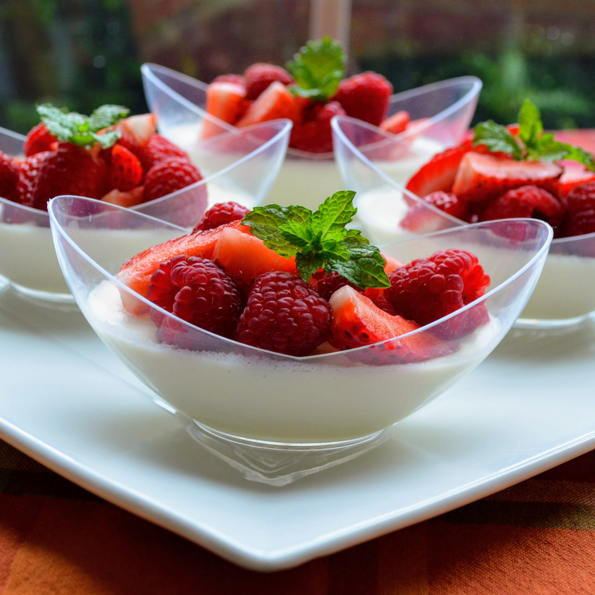

Berry Panna Cotta

Description
This panna cotta is like a lemon cream custard. The lemon goes really well with raspberries and strawberries.
Ingredients
- 1/4 lemon
- 1 pint heavy cream
- 1/2 c confectioner's sugar
- 1 c milk
- 3-1/2 tsp gelatin
- 3/4 tsp vanilla
- 1-1/2 sliced strawberries
- 1-1/2 c raspberries
Steps
- Cut the rind from 1/4 lemon into long strips. Place strips in a saucepan with cream and confectioners' sugar. Bring to a simmer over medium heat. Set aside to steep for 10 minutes.
- Meanwhile, combine milk and gelatin in a small bowl. Let sit for 5 minutes.
- Reheat the cream mixture until hot. Remove from heat. Stir in gelatin mixture and vanilla extract. Remove lemon rind. Pour into 8 ramekins and refrigerate until set, about 1 to 2 hours.
- To serve, arrange strawberry slices and raspberries on top of each custard.